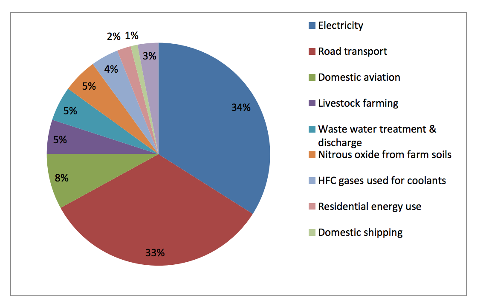

INTENDED NATIONALLY DETERMINED CONTRIBUTIONS
COOK ISLANDS
Introduction
The Cook Islands is a small island developing state comprising of 15 small islands with an exclusive economic zone (EEZ) of nearly 2 million sq km in the South Pacific Ocean. Globally, the Cook Islands contributes to only 0.00012% of GHG emission, which is an insignificant amount relative to the total global emission of 2004 (IPCC Report, 2007). Yet, collectively, the consequences of the global emission via climate change is detrimental to ecosystems, infrastructures, economy, and therefore the livelihood of Cook Islanders.
The Cook Islands has carved a pathway of low carbon development to strengthen climate resilience and further reduce its carbon footprint to achieve its national vision, which is ‘to enjoy the highest quality of life consistent with the aspirations of our people, and in harmony with our culture and environment’.
The Cook Islands believes that by aspiring to its national vision it is striving to keep the overall global average temperature rise below 1.5 degrees Celsius.
Mitigation
Based on the 2006 GHG inventory, the Cook Islands’ emission was estimated at 69,574 t CO2e, which contributes to 0.00012% of the 2004 global GHG emission (IPCC, 2007).
The energy sector alone contributed 79% of the total emission for 2006, with 34% attributed to electricity generation (Figure 1).

Figure 1: Breakdown in national emission by activity for 2006 (Second National Communications, 2011)
The Cook Islands is committed to a future powered by renewable energy with targets of 50% of islands transformed from diesel based to renewable sourced electricity by 2015, to 100% coverage by 2020 (Cook Islands Renewable Electricity Chart, 2011). To date, the Cook Islands has achieved its 50% target and is on track to achieving the 2020 target. Using 2006 as the base year, emission from electricity generation will be reduced by 38% by 2020 (Figure 2). The Cook Islands has formally submitted a Nationally Appropriate Mitigation Action (NAMA) under the United Nations Framework Convention on Climate Change for supporting implementation of 100% renewable electricity by 2020.
To ensure sustainability and the credibility of its efforts, the Cook Islands will endeavour to put in place the appropriate structures to monitor, evaluate and pursue value added activities. These will include inter alia undertake the construction of additional and new grid storage, integration of improved energy efficiency and new technologies, technology transfer, and strengthening capacities for overall sustainability and co-benefits. This would reduce emissions from electricity generation by a further 43%, totalling an 81% emissions reduction by 2030 (relative to 2006). This further reduction is conditional on receiving external support.

Figure 2. Electricity emission from 1994 to 2014. The Cook Islands base year is 2006 (blue dash line) and an unconditional target of 38% reduction by 2020. A conditional reduction of 43% by 2030, making a total reduction of 81% in the electricity sub sector.
Given that the transport sub sector is the second highest GHG emitter in the Cook Islands, the Customs Tariff Act 2012 establishes noteworthy duty rates on the importation of motor vehicles. Additionally, the Cook Islands is looking to embrace proven low carbon transport technologies and is currently exploring the most effective incentives for promotion of transition towards clean energy transportation. This will further reduce our overall emissions, conditional on external support.
Adaptation
Unconditional
Given the Cook Islands size, vulnerabilities, limited resources, and capacities whilst noting also its special circumstances, designating its entire EEZ of almost two million sq km as a marine park is evidence of national commitment to the global effort to building the resilience of marine ecosystems.
The country has developed key plans and policies that articulate its priorities to reduce vulnerability and strengthen resilience. This includes the first 20 year national vision ‘Te Kaveinga Nui’, accompanied by the first National Sustainable Development Plan (NSDP) 2007-2010, and subsequently the second NSDP 2011-2015 with the latest 2015-2020 to follow. The Joint National Disaster Risk Management and Climate Change Adaptation Plan (JNAP) is a five-year (2011-2015) roadmap that is currently being updated to 2020. The Climate and Disaster Compatible Development Policy 2013-2016, provide direction for more coordinated adaptation and mitigation actions within and across all sectors. The Renewable Energy Chart provides the pathway of transforming the electricity sector from diesel based to renewable energy sources.
The Cook Islands is confident that its existing frameworks and robust systems guiding ongoing climate change mitigation and adaptation measures are considerable, and its commitments are ambitious to the global goal despite its unique circumstances.
Conditional
Note that Loss and Damage is not factored into the policy and planning processes outlined above. Nor are the full costs associated with building resilience to climate change, which the Cook Islands expects will be covered by the international community over time.
The Cook Islands is confident that its strategies and policies pre 2020 and post 2020 will reduce and offset its carbon emissions and strengthen resilience. These actions include inter alia coastal protection, water security, agriculture, forestry, marine conservation, waste, tourism and land management.
The Cook Islands is confident that it can deliver 100 per cent of its adaptation measures, provide tools and technologies and strengthen capacities in all its inhabited islands, conditional to external support.
Cook Islands reserves the right to adjust this target and its parameters subject to the outcome of COP21 and to external support.
A fair and ambitious contribution under the Convention
Cook Islands intended nationally determined contribution is fair, ambitious and responsible given its special circumstances and considering that its total global GHG emission is negligible.